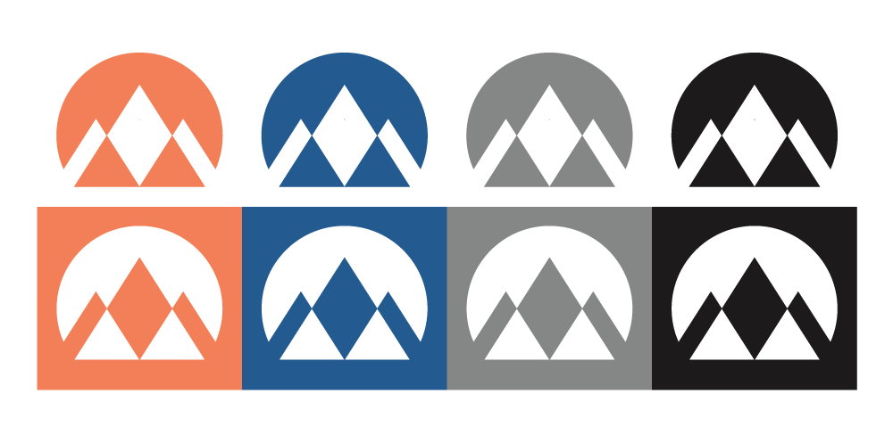

Site Name
Peak Chamber of Commerce
Purpose
The Peak Chamber of Commerce will be marketed towards young adult business owners in the East Idaho area. This website's purpose is to convince young adult entrepreneurs to join by informing them of all the benefits their business can enjoy.
Domain
PeakChamber.orgLogo
